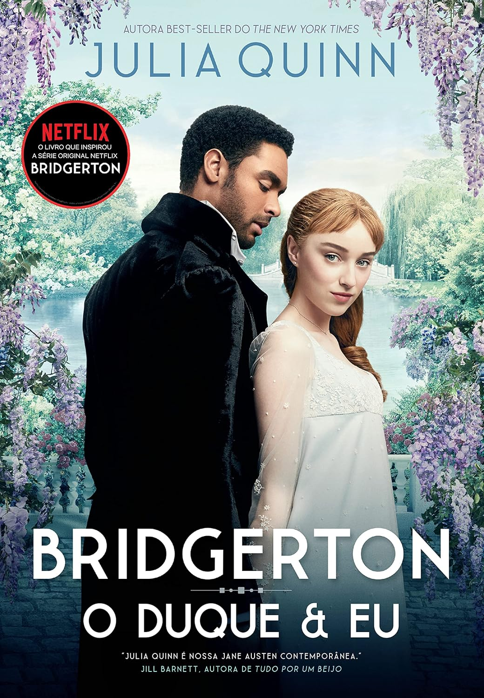

Romeu e Julieta
Há muito tempo duas famílias banham em sangue as ruas de Verona. Enquanto isso, na penumbra
das madrugadas, ardem as brasas de um amor secreto. Romeu, filho dos Montéquio, e Julieta,
herdeira dos Capuleto, desafiam a rixa familiar e sonham com um impossível futuro, longe da
violência e da loucura. Romeu e Julieta é a primeira das grandes tragédias de William
Shakespeare, e esta nova tradução de José Francisco Botelho recria com maestria o ritmo ao
mesmo tempo frenético e melancólico do texto shakespeariano. Contando também com um
excelente ensaio introdutório do especialista Adrian Poole, esta edição traz nova vida a uma
das mais emocionantes histórias de amor já contadas.
Learn More

Outlander: A viajante do tempo
Em 1945, no final da Segunda Guerra Mundial, a enfermeira Claire Randall volta para os braços
do marido, com quem desfruta uma segunda lua de mel em Inverness, nas Ilhas Britânicas.
Durante a viagem, ela é atraída para um antigo círculo de pedras, no qual testemunha rituais
misteriosos. Dias depois, quando resolve retornar ao local, algo inexplicável acontece: de
repente se vê no ano de 1743, numa Escócia violenta e dominada por clãs guerreiros.
Tão logo percebe que foi arrastada para o passado por forças que não compreende, Claire
precisa enfrentar intrigas e perigos que podem ameaçar a sua vida e partir o seu coração. Ao
conhecer Jamie, um jovem guerreiro das Terras Altas, sente-se cada vez mais dividida entre a
fidelidade ao marido e o desejo pelo escocês. Será ela capaz de resistir a uma paixão
arrebatadora e regressar ao presente?
Learn More

O duque e eu
Simon Basset, o irresistível duque de Hastings, acaba de retornar a Londres depois de seis
anos viajando pelo mundo. Rico, bonito e solteiro, ele é um prato cheio para as mães da alta
sociedade, que só pensam em arrumar um bom partido para suas filhas.
Simon, porém, tem o firme propósito de nunca se casar. Assim, para se livrar das garras
dessas mulheres, precisa de um plano infalível.
É quando entra em cena Daphne Bridgerton, a irmã mais nova de seu melhor amigo. Apesar de
espirituosa e dona de uma personalidade marcante, todos os homens que se interessam por ela
são velhos demais, pouco inteligentes ou destituídos de qualquer tipo de charme. E os que
têm potencial para ser bons maridos só a veem como uma boa amiga.
A ideia de Simon é fingir que a corteja. Dessa forma, de uma tacada só, ele conseguirá
afastar as jovens obcecadas por um marido e atrairá vários pretendentes para Daphne. Afinal,
se um duque está interessado nela, a jovem deve ter mais atrativos do que aparenta.
Mas, à medida que a farsa dos dois se desenrola, o sorriso malicioso e os olhos cheios de
desejo de Simon tornam cada vez mais difícil para Daphne lembrar que tudo não passa de
fingimento. Agora, ela precisa fazer o impossível para não se apaixonar por esse
conquistador inveterado que tem aversão a tudo o que ela mais quer na vida.
Primeiro dos nove livros da série Os Bridgertons, O duque e eu é uma bela história sobre o
poder do amor, contada com o senso de humor afiado e a sensibilidade que são marcas
registradas de Julia Quinn.
Learn More
A cinco passos de você
Stella Grant gosta de estar no controle. Ela parece ser uma adolescente típica, mas em sua
rotina há listas de tarefas e inúmeros remédios que ela deve tomar para controlar a fibrose
cística, uma doença crônica que impede que seus pulmões funcionem como deveriam. Suas
prioridades são manter seus pais felizes e conseguir um transplante – e uma coisa não existe
sem a outra. Mas para ganhar pulmões novos, Stella precisa seguir seu tratamento à risca e
eliminar qualquer chance de infecção, o que significa que ela não pode ficar a menos que
dois metros de distância – ou seis passos – de outros pacientes com a doença. O primeiro
item é fácil para ela, mas o segundo pode se provar mais difícil do que ela esperava.
O único controle que Will Newman deseja é o de sua própria vida. Ele não dá a mínima para o
novo tratamento experimental para o qual foi selecionado e não aguenta mais a pressão de sua
mãe para que melhore. Prestes a completar dezoito anos, ele mal pode esperar para finalmente
se livrar das máquinas e hospitais, usando o pouco de vida que ainda lhe resta para conhecer
o mundo. Stella e Will são muito diferentes. Ao mesmo tempo, a doença que os une não é a
única coisa que têm em comum. Eles têm que ficar a cinco passos um do outro, mas, conforme a
conexão entre os dois aumenta, a vontade de burlar a distância física parece insuportável.
Um grande amor vale um passo roubado?
Learn More